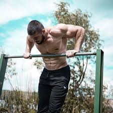

Ocho tipos de dominadas y cómo hacerlas bien
MiCuenta
Inicio Mi perfil Mis Suscripciones Mis intereses Newsletters y alertas Ofertas Noticias guardadas Autores seguidos Mi archivo Concursos y eventos Contacto Cerrar sesiónMis alertas
Alimentación Dietas Etiquetas Recetas Alimentario Fitness y cuidados Entrenamientos Ejercitario Psicología y sexo Psicología Sexo Meditación Emocionario AbecedarioFitness
Ocho tipos de dominadas y cómo hacerlas bien
Asistidas, supinas, al pecho hay una dominada para cada persona y el entrenador personal Miguel Ángel Peinado explica cada una de ellas para que las introduzcas, poco a poco, en tus entrenamientos
Cómo hacer bien una dominada. - Adobe Stock 06 Feb 2021 01:22h Melissa González Redactora Seguir Comentar GuardarNo cabe duda de que si se quiere trabajar el tren superior , nada como hacer dominadas . El problema reside en que resulta un ejercicio un tanto costoso que requiere de fuerza , tanta como para poder levantar nuestro propio peso.
Tal como explica el entrenador personal Miguel Ángel Peinado ( @miguel.trainer ), las dominadas son un ejercicio básico en cualquier tipo de entrenamiento: «el grado de dificultad y el elevado trabajo muscular que requieren provocan un gran desarrollo muscular principalmente de la zona dorsal pero también de los bíceps y otros grupos musculares, además de permitir variantes que modifican las zonas de trabajo».
Beneficios
Permite desarrollar la fuerza muscular y fortalece las articulaciones de hombros y muñecas Estabiliza el tronco, define el abdomen y mejora la postura Reduce el dolor de espalda Tonifica el cuerpoErrores que debes evitar
No estirar completamente los codos hace que el rango de movimiento sea menor Contraer demasiado los hombros, sobrecarga el trapecio Usar el impulso del cuerpo, el salto y el balanceo trabaja otras partes del cuerpo que no son los músculos de la espalda y los brazos Contar repeticiones no completas es perjudicial. Es mejor realizar 3 repeticiones bien hechas que 10 mal hechasHacer bien una dominada
Los diferentes tipos de dominadas nos darán una gran fuerza, resistencia muscular, agilidad e incluso algunos tipos de dominadas nos darán resistencia cardiovascular. «No hay excusa para probar estos excelentes ejercicios de fuerza corporal», dice Miguel Ángel Peinado, que llega a diferenciar hasta nueve tipos de dominadas.
Sin embargo, para comenzar a hacer variaciones es fundamental controlar la dominada básica. «Colgarte» de la barra e intentar subir tu cuerpo de cualquier manera es un error de principiante que puede tener consecuencias no deseadas. Fijar la postura de inicio es el primer paso de la técnica correcta de las dominadas. Por ello, tienes que adoptar una buena postura para hacer dominadas:
- Contar con una potente sujeción . Son tus manos las que van a tirar de todo tu peso, así que preparar sus articulaciones, muñecas incluidas, para tal fin es esencial. Antes de empezar con las dominadas, haz ejercicios específicos para fortalecer brazos y manos.
- Elegir el tipo de agarre con el que te sientas más cómodo, siempre teniendo en cuenta los músculos que quieres trabajar más a fondo. «Elige entre agarre prono o supino (palmas hacia abajo o hacia arriba respectivamente), los dos son igualmente efectivos», dice. También determina la amplitud de agarre (distancia entre las dos manos). Para empezar a hacer dominadas, lo ideal es situarlas a la altura de los hombros o con algo más de apertura: «Es importante que agarres la barra con comodidad, apoyando en ella los pulgares para contar con un apoyo más amplio y firme».
- Mantener tu espalda recta o ligeramente cóncava, el pecho erguido y tu abdomen siempre contraído (esencial para mantener el equilibrio y proteger tus lumbares).
- Elegir si quieres hacer las dominadas con las piernas rectas o con las rodillas ligeramente flexionadas (este último caso solo es recomendable en el caso de tocar el suelo con tus piernas).
Consejos de experto
Definida tu postura de arranque, llega el momento de realizar la primera elevación. La mejor técnica para hacer las dominadas es aquella te permite mantener un ritmo constante durante todo el ejercicio y la que centra el esfuerzo en la musculatura de tu espalda (dorsales) y no en tus bíceps, que por supuesto, intervienen de manera fundamental, pero no han de convertirse en el centro de tu esfuerzo.
1. «Al iniciar la subida, el cuerpo no debe estar totalmente recto, sino ligeramente oblicuo porque debes mantener la cabeza unos centímetros separada de la barra», indica.
2. «Flexiona tus brazos intentando no separar los codos de tus costados. Contrae los bíceps intentando elevarte sin tensionar el cuello», recomienda.
3. La respiración es también importante. Recuerda expulsar el aire en la subida e inhalar, por la nariz o la boca, en el descenso y en el segundo de transición entre dos dominadas.
4. Una buena técnica de dominadas debe lograr que tu barbilla supere la barra . «Mientras realizas el movimiento, procura no echar los hombros hacia adelante, mantén los músculos de las piernas relajados y, en cambio, contrae los del abdomen y los glúteos», explica Miguel Ángel Peinado.
5. «Para ganar fuerza y potencia en tu musculatura, las dominadas son un ejercicio perfecto y con la técnica adecuada, lograrás los mejores resultados», concluye el entrenador.
Ahora sí, estas son las diferentes dominadas que puedes llegar a hacer:
- Dominadas estrictas . Son el tipo más básico de dominadas. Son aquellas que se nos vienen a la cabeza cuando nos preguntan por lo que es una dominada. Recuerda el entrenador que deberemos tener en cuenta que «no podremos mover ni un ápice nuestra cadera ni las piernas», únicamente los brazos podrán moverse durante su ejecución. «A modo de recordatorio, deberemos partir el movimiento desde la zona inicial. Lo haremos con los brazos completamente extendidos y no finalizaremos de elevarnos hasta que consigamos pasar la perilla por encima de la barra de dominadas», indica el entrenador de Better Naked Club ( @betternakedclub ).
- Dominadas supinas . Las dominadas supinas o «chin up» son aquellas que involucran más a los bíceps en la ejecución del movimiento. Al igual que las dominadas pronadoras, las supinas se pueden realizar estrictas, con kipping e incluso elevándonos hacia el pecho.
- Dominadas con kipping . Las dominadas con kipping, son aquellas que se realizan con la ayuda del impulso de nuestro cuerpo para realizarlas. Más que tratar de conseguir aumentar masa muscular, se busca optimizar la funcionalidad corporal. Teniendo como objetivo sacar más número de dominadas que ensanchar los músculos de la espalda.
- Dominadas al pecho . Son una versión de las dominadas con kipping en versión algo más compleja, pues para realizarla adecuadamente, tendremos que tocar con nuestro pecho en la barra de dominadas. Para esto, necesitaremos impulsarnos potentemente con nuestros brazos y caderas para conseguir elevar a nuestro cuerpo hasta conseguir tocar el pecho. No es un ejercicio nada fácil de realizar, no recomendada para neonatos en la materia.
- Dominadas asistidas . Al igual que las dominadas parciales o incluso con las dominadas con kipping, las dominadas asistidas son aquellas que se realizan «cuando no somos capaces de realizar dominadas estrictas». Para ello, utilizamos una máquina asistida o una goma elástica que nos ayuda a elevar nuestro cuerpo.
- Dominadas abiertas . Las dominadas abiertas son exactamente iguales que las dominadas convencionales, simplemente cambiando la posición de las manos. Se abren más las manos con el fin de trabajar más los músculos dorsales y se pueden realizar, con agarre supino y agarre pronador.
- Dominadas parciales . Las dominadas parciales son la versión elegida por las personas que no tienen la pericia suficiente para conseguir sacar dominadas completas. «Son excelentes, pues aparte de ayudarnos a trabajar los músculos que participan en las dominadas nos sirven para adquirir la dinámica correcta de movimiento, haciendo que el esfuerzo sea mucho menor cuando intentemos volver a realizar las dominadas comunes», dice Miguel Ángel Peinado.
Para ejecutarlas, el rango de movimiento será graduable, «pudiendo marcarnos un límite en la subida o realzándolas hasta lo máximo que podamos, marcándolo en función de nuestras necesidades específicas». Por ejemplo, alguien que nunca haya hecho ejercicio y tenga un peso corporal elevado, el rango de movimiento será pequeño. Sin embargo, otra persona que se quiera centrar en trabajar el punto de estancamiento, el recorrido será previsiblemente mayor.
- Dominadas isométricas . Las dominadas isométricas son aquellas en las que deberemos aguantar el máximo tiempo posible en una determinada posición del movimiento. Podemos elegir el grado donde realizar las dominadas para ganar fuerza en la zona escogida. Esto nos permite variar constantemente el ejercicio, añadiendo o quitando dificultad. «Es una dominada recomendada para principiantes ya que el nivel de fuerza física que necesitaremos tener para conseguir realizarla es mucho menor. Perfecta para conseguir realizar dominadas completas», aconseja.
Ver los comentariosTemas
Fitness Deportes Ejercicio Comentarios -30% 43€ 30€Entradas El Lago de los Cisnes Madrid
Teatro EDP Gran VíaVer Oferta
Código descuento Promofarma
Cupón descuento Promofarma Ver Descuentos ABC Te puede interesarSiete tipos de burpees y cómo hacerlos bien
Sentadillas: qué tipos hay y cómo realizarlas correctamente
Consultorio
Déjanos tu pregunta sobre nutrición, fitness, psicología o pareja
ConcursoGana una selección de regalos bienestarios para mimarte
Descubre cómo cuidarte por dentro y por fuera con productos de alimentación y cosmética
Antes de continuar¡Hola, !
Queremos conocerte para poder ofrecerte los contenidos según tus preferencias ¿Podrías respondernos unas breves preguntas?
No te llevará más de un minuto.
¡Gracias por adelantado!
Por favor ¿Nos puedes facilitar tu fecha de nacimiento y género?
Queremos conocerte 1 2Por favor, marca uno o varios temas que sean de tu interés .
Aceptar Omitir este paso Queremos conocerte
Aceptar Vocento Sobre nosotros Contacto Política de privacidad Política de cookies Condiciones de uso Aviso legal Condiciones de contratación Horóscopo Chino La Colmena Horóscopo Copyright © DIARIO ABC, S.L.
Enlaces Vocento
ABC ABC Sevilla Hoy El Correo La Rioja El Norte de Castilla Diario Vasco El Comercio Ideal Sur Las Provincias El Diario Montañés La Voz Digital La Verdad Leonoticias.com Burgosconecta Unoauto.com Infoempleo WomenNow Autocasión Oferplan Pisos.com Mujerhoy XL Semanal Welife Este sitio web utiliza cookies propias y de terceros para optimizar su navegación, adaptarse a sus preferencias y realizar labores analíticas.Al continuar navegando acepta nuestra Política de Cookies.